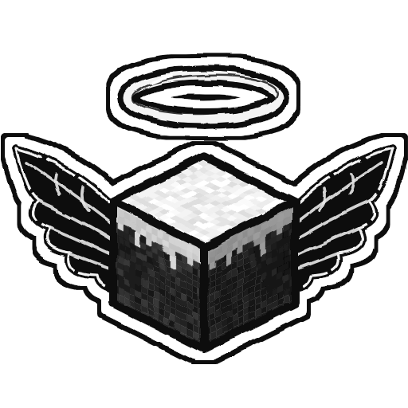

Tedious
A Minecraft client with its own launcher.
Latest versionInstaller
about 60 KB, then 67 MB onceThe easy way. A tiny download that fetches Tedious and installs it for you only (no admin needed), with Start-menu and desktop shortcuts and an uninstaller in Apps & features.
Download Tedious-Setup.exePortable
67 MBThe whole app in one file. Nothing to install: put Tedious.exe anywhere (even a USB stick) and double-click it. It updates itself too.
Download Tedious.exeUpdater
about 50 KBA repair tool. If Tedious did not update itself or stopped working, run this: it downloads the newest Tedious (checked with a SHA-256) and puts it in place. It also installs Tedious if you have nothing yet.
Download Tedious-Updater.exe.NET version
about 1.4 MBThe small version. It needs the free .NET 10 Desktop Runtime (x64) from Microsoft installed once. Less storage, tiny updates.
Download Tedious-NET.exeWindows 10 / 11, 64-bit. Windows may show a SmartScreen note because Tedious is a new, unsigned app: choose "More info" then "Run anyway".
What is new
- Updates now come straight from GitHub: press "Check for updates" and Tedious downloads and checks the new version itself.
- Choose Fabric, NeoForge, Forge or Vanilla for each instance.
- Connected textures that work with Sodium, and render distance up to 125.
What is inside
- Java and Bedrock in one launcher
- Mods and packs from Modrinth
- Accounts and skins
- Host and manage your own servers
- In-game HUD, crosshair and FPS booster
- English and Korean (한국어)